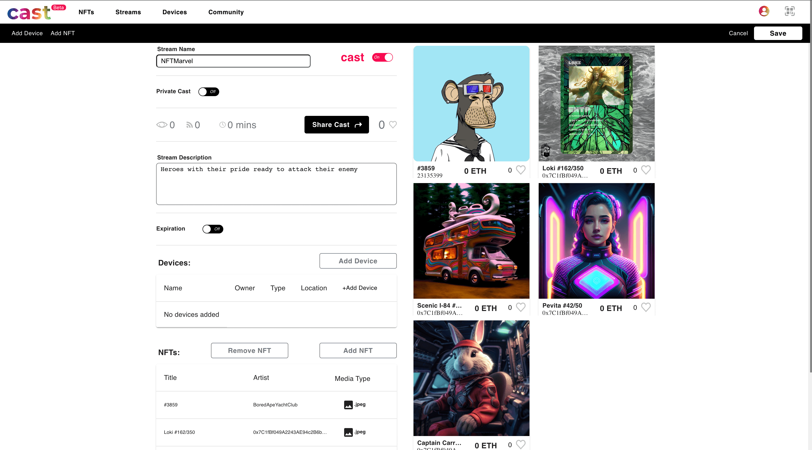

Projects
Advanced Solutions Studio
Projects
Cast
Cast emerged as an innovative platform revolutionizing the way NFTs (Non-fungible Tokens) are displayed and interacted with. It offers users the ability to effortlessly "cast" or display their NFT assets to any device globally. What sets Cast apart is its unique device registration system: rather than relying on traditional downloads and installations, Cast generates a QR code. Once scanned, the device is instantly registered without necessitating any software installation, turning any screen into a digital canvas. The platform's potential didn't end there; plans were set in motion to evolve Cast into an NFT marketplace, taking inspiration from renowned platforms like OpenSea.
Technologically, Cast was sculpted using Next.js, a React framework, ensuring a dynamic user interface. Given the client-centric nature of the operations, Firebase was chosen as the database, streamlining data management and real-time updates. TailwindCSS was integrated, offering flexibility and robustness to the platform's design, ensuring it looked and performed impeccably. The deployment was executed on Heroku, facilitating scalable performance and easy maintenance.


Within the Cast project, my contributions spanned multiple critical areas. I championed the user authentication process, ensuring secure and seamless access. My involvement extended to managing the envisioned marketplace and diligently troubleshooting core bugs that arose during development. A significant achievement was the optimization of site load times, enhancing user experience. I further integrated a subscription and payment gateway, streamlining the monetization process. Recognizing the ubiquity of mobile users, I also played a pivotal role in ensuring Cast was fully mobile-responsive, ensuring every user, regardless of device, had an optimal viewing experience.